转载自：https://www.sohu.com/a/239651982_100180425
书不在多，而贵于精。
编程界也有很多经典书籍，而且这些经典书籍很多都有一个霸气的别名，如编译原理领域有“龙书”“虎书”“鲸书”的说法，听起来是不是瞬间高大上了。
其实，这些书的别名主要根据封面、作者姓名首字母、书名首字母来命名的。下面，我们就来盘点下编程界的龙书、虎书、鲸书、橡书、犀牛书、蝴蝶书…都是指哪些？
首先来看看依据封面命名的书籍。
编译原理三大圣书：
1、《编译原理》（龙书）
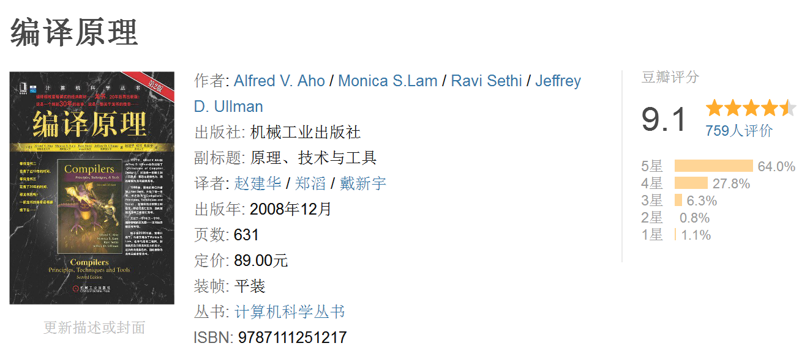
《编译原理》最新版
本书深入讨论了编译器设计的重要主题，包括词法分析、语法分析、语法制导分析、类型检查、运行环境、中间代码生成、代码生成、代码优化等。并在最后两章讨论了实现编译器的一些编程问题和几个编译器实例。
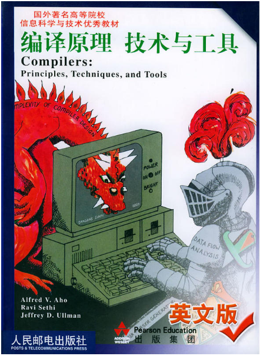
”龙书“的由来：1977年的封面是一个骑士和一只恐龙，因此第一次被人们叫做龙书，而且那条龙是绿色的，所以又叫绿龙书。再次之后随着不断的改版，又相继出现了红龙书、紫龙书。
2、《现代编译原理：Ｃ语言描述 》（虎书）
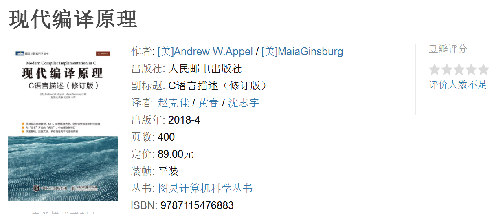
《现代编译原理：C语言描述》修订版
在编译领域，“虎书”和“龙书”齐名。虎书出版的比较晚，与“龙书”相比，内容上增加了数据流分析、循环优化、内存管理等内容。上图为上个月才出版的修订版。
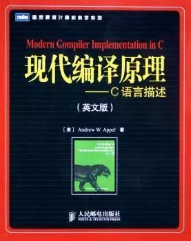
”虎书“的由来：第一版封面是一只老虎，因此也被人们叫做“虎书”，本书使用的是更适合广大读者的C语言，而另外两本书分别采用ML语言和Java语言。
3、《高级编译器设计与实现》（鲸书）
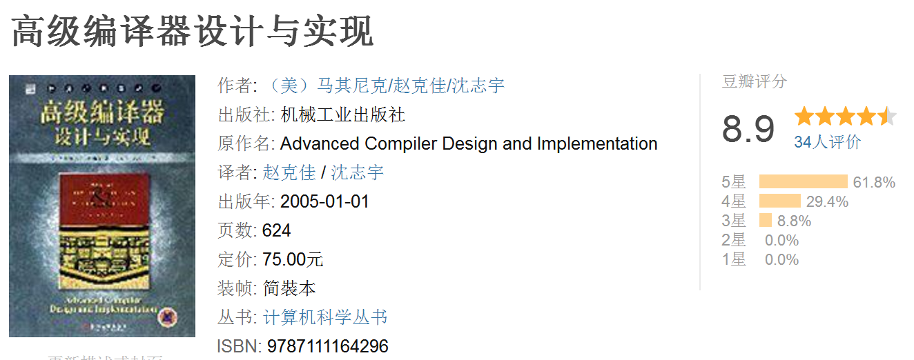
对于鲸书来说，出版的时间比“龙书”和“虎书”晚，它不但包含了起那两本书的内容，而且还涵盖其中包含了一些比较高级的编译器的设计和实现，是针对有一定基础的人群来学习的。
4、《编译器设计》 （象书）
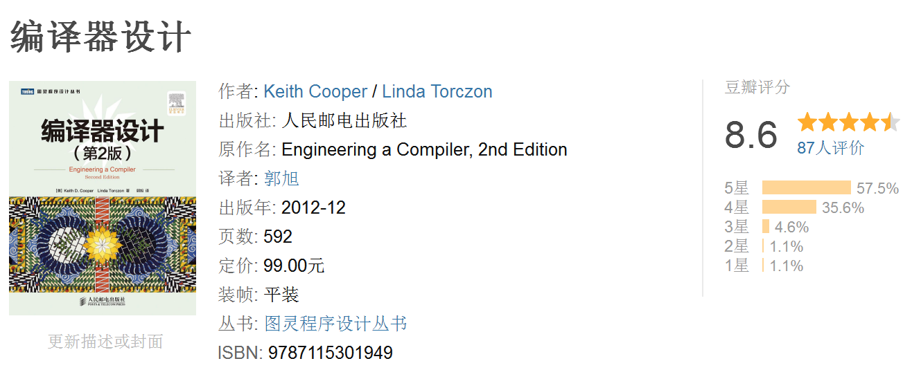
此书也被称为象书，虽然没有被列入编译原理三大圣书名单，但内容还是相当不错的。
主要介绍编译器构造法中的艺术和科学。书中深入分析现代编译器后端所用的算法和技术，重点讨论代码优化和代码生成，详细介绍了用几个编程语言编写的示例等。
5、《OpenGL编程指南(第八版)》 (红宝书)
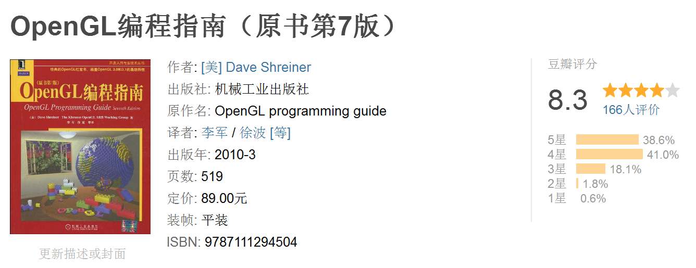
《OpenGL编程指南》素有“OpenGL红宝书”之誉。本书以清晰的语言描述了OpenGL的功能以及许多基本的计算机图形技巧，内容详实，讲解生动，图文并茂，是OpenGL程序员的绝佳编程指南。
6、《OpenGL超级宝典》 （蓝宝书）
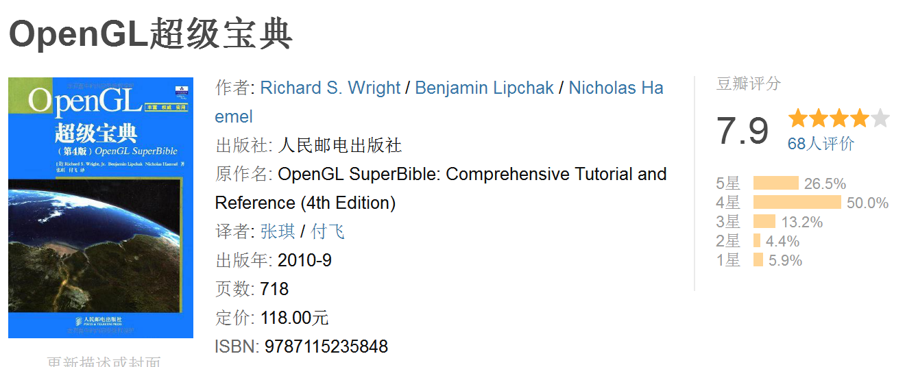
《OpenGL超级宝典》素有“OpenGL蓝宝书”之誉。是OpenGL及3D图形编程最好的入门指南，书中涵盖了使用最新版本的OpenGL进行编程所需要的主要知识。
7、《OpenGL着色语言》（橙宝书）
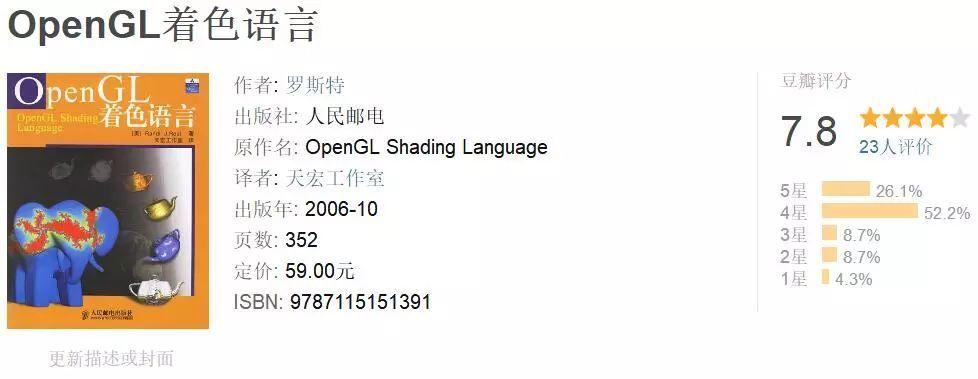
《OpenGL着色语言》全面覆盖从算法到API，书中更含丰富的API函数参考及顶级的案例分析。要求读者需要具有一定的数学知识，适合有兴趣编写着色器的应用程序开发人员，可作为GLSL开发者的参考手册。本书还有“OpenGL蓝宝书”的称号
8、《DirectX 9.0 3D游戏开发编程基础》 （红龙书）
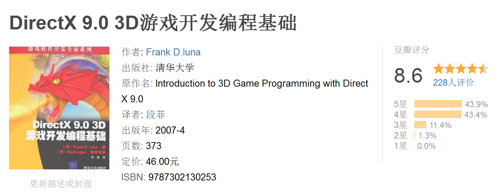
主要介绍如何使用DirectX 9.0开发交互式3D图形程序，重点是游戏开发。全书首先介绍了必要的数学工具，然后讲解了相关的3D概念。
几乎涵盖了Direct3D中的所有基本运算，所以作为入门书籍还是不错的，它的封面是一条红色的龙，因此也被称之为红龙书
9、《计算机程序的构造和解释》 魔法书
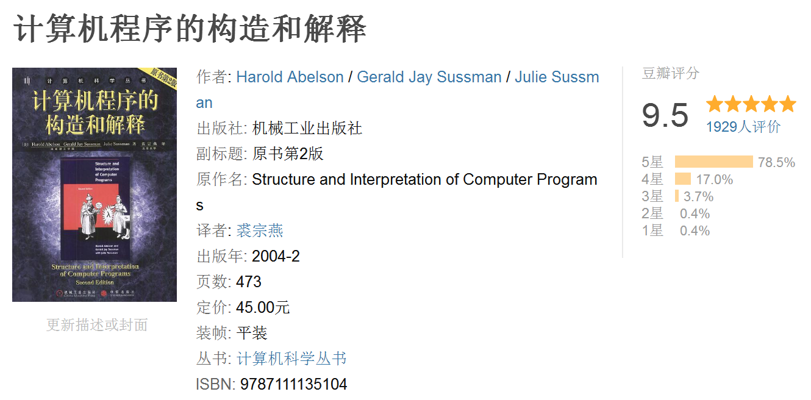
这本书的称号就比较多了，被称为是计算机语言界的魔法书、紫皮书、巫师书以及SICP。本书要讨论的各种问题都牵涉到三类需要关注的对象：人的大脑、计算机程序的集合以及计算机本身。如今已经被世界各地100多所高校采用作为教材
10、《Java高级程序设计》（红宝书）
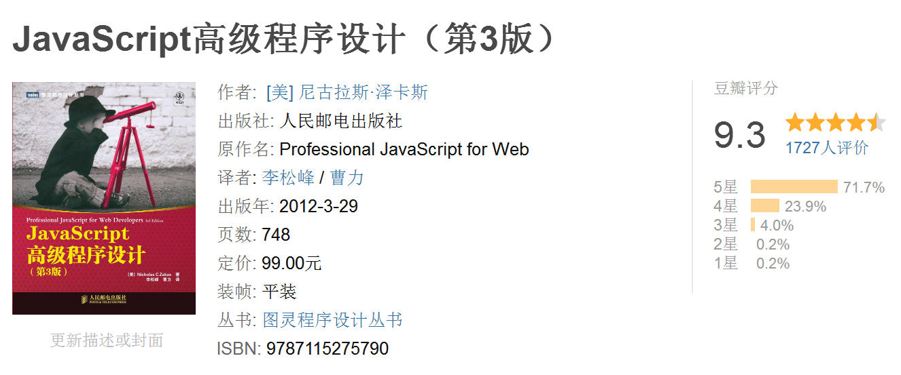
提升JS水平经典的红宝书，。全书从Java 语言实现的各个组成部分以及离线应用和与维护、性能、部署相关的最佳开发实践。适合有一定编程经验的Web 应用开发人员阅读。
11、《Java权威指南》 （犀牛书）
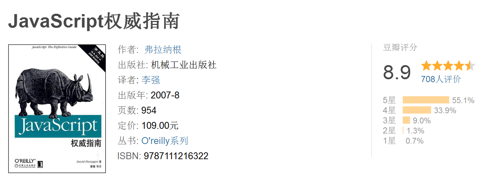
本书全面介绍了Java语言的核心，以及Web浏览器中实现的遗留和标准的DOM。它运用了一些复杂的例子，说明如何处理验证表单数据、使用cookie、创建可移植的DHTML动画等常见任务。封面是一头犀牛，因此也叫犀牛书
12、《Java语言精粹》（蝴蝶书）
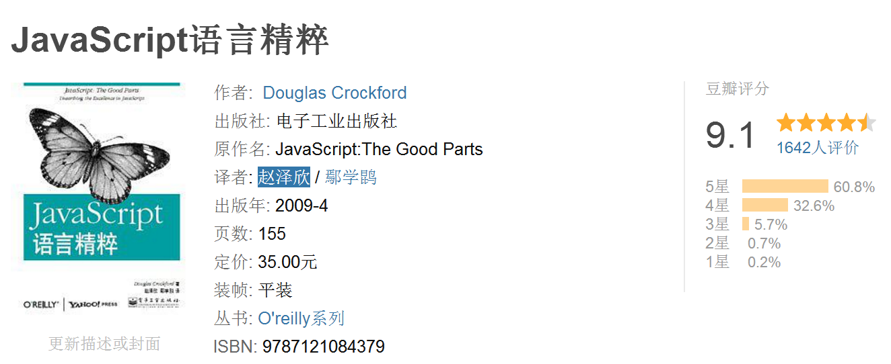
这本书只有100来页，可以很快看完，故名“精粹 ”。蝴蝶书的作者是道格拉斯·克罗克福特（Douglas Crockford，JSON的缔造者），蝴蝶书对于了解JS的基础知识，比如对象，数组，语法，作用域，闭包等等都颇有帮助，在JS的代码风格上也给出不少好的建议。
13、《编写可维护的Java》 （乌龟书）
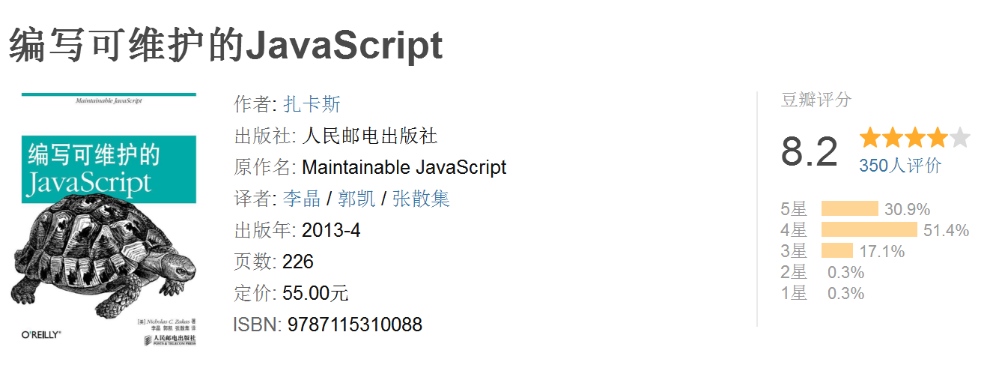
《编写可维护的Java》内容涵盖了编码风格、编程技巧、自动化、测试等几方面，既包括具体风格和原则的介绍，也包括示例和技巧说明，最后还介绍了如何通过自动化的工具和方法来实现一致的编程风格。
14、《Java Web 富应用开发》 （猫头鹰书）
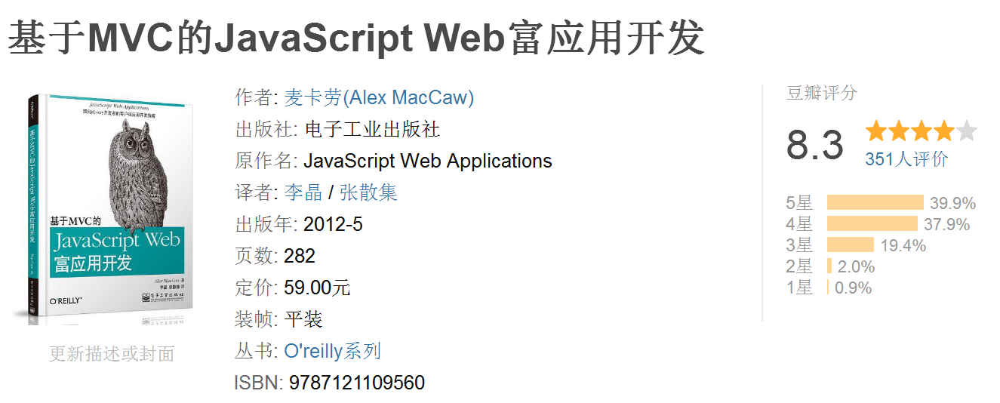
《Java Web 富应用开发》本书系统而深入的讲解了如何使用最前沿的Web技术构建下一代互联网富应用程序。因封面是头猫头鹰，因此也被称之为猫头鹰书
有些书的称号则是来根据作者命名的：
15、《算法导论》 （CLRS ）
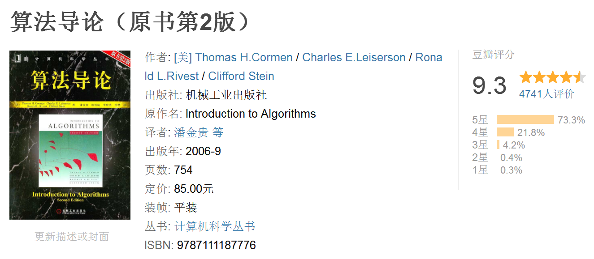
这本书全面地介绍了计算机算法。对每一个算法的分析既易于理解又十分有趣，并保持了数学严谨性。是由Thomas H.Cormen 、Charles E.Leiserson、Ronald L.Rivest 、Clifford Stein 这四位合著，四位作者的首字母为CLRS，因此这本书也被称为CLRS
16、《设计模式》 （GOF）
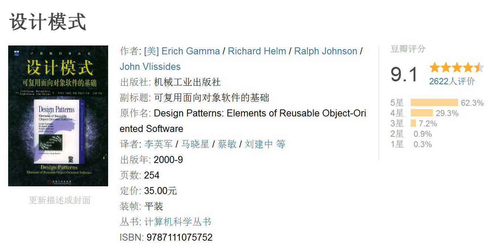
这本书结合设计实作例从面向对象的设计中精选出23个设计模式，总结了面向对象设计中最有价值的经验，并且用简洁可复用的形式表达出来。
《设计模式》一书由 Erich Gamma、Richard Helm、Ralph Johnson 和 John Vlissides 合著(Addison-Wesley，1995)。这几位作者常被称为”四人组(Gang of Four)”，因此这本书也被称之为GOF
17、《C程序设计语言》（ K&R）
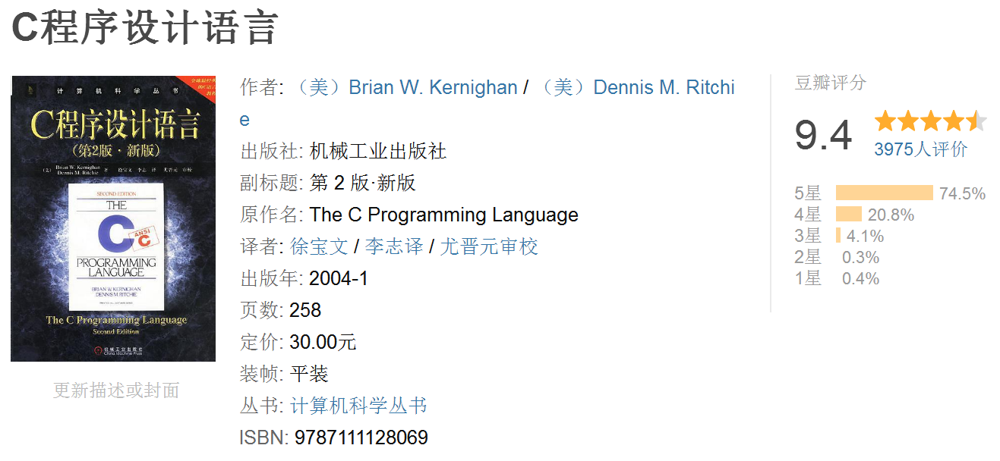
我们现在见到的大量论述C语言程序设计的教材和专著均以此书为蓝本。原著第1版中介绍的C语言成为后来广泛使用的C语言版本——标准C的基础。人们熟知的“hello,World”程序就是由本书首次引入的。C程序设计语言一书由Brian W. Kernighan / （美）Dennis M. Ritchie 合著，因此此书也被称之为K&R
也有的书是根据书名的首个字母命名的，如下：
18、《深入理解计算机系统》 （CSAPP）
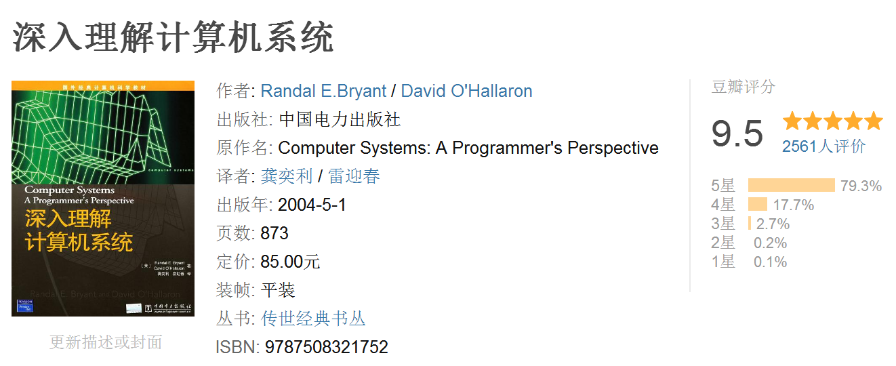
从程序员的视角，看计算机系统！它是CMU的神课Introduction to Computer Systems的教材，分别介绍了信息的表示和处理、程序的机器级表示、处理器体系结构、存储器层次结构等计算机系统相关内容，命名来自书名首字母《Computer Systems: A Programmer’s Perspective》
19、《计算机程序设计艺术》（TAOCP）
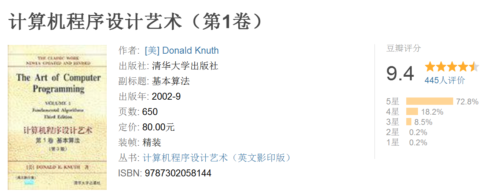
《计算机程序设计艺术》系列是公认的计算机科学领域权威之作，深入阐述了程序设计理论，对计算机领域的发展有着极为深远的影响。命名同样来自书名首字母《the Art of computer programming 》。
比尔·盖茨曾说过，如果学完了3卷TAOCP，就把简历寄给他，由此可见，这本书在编程界的地位之高
[分割线]
黑皮书系列
操作系统概念
深入理解计算机系统
现代操作系统
计算机科学导论
编译原理